Difensori
3 Mika Mármol (DC)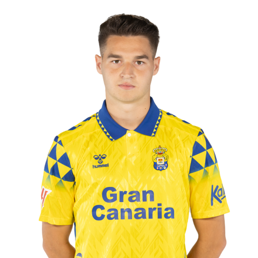
4 Alex Suárez (DC)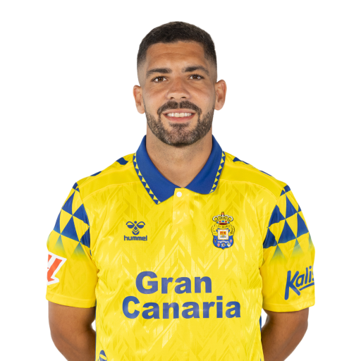
15 Scott McKenna (DC)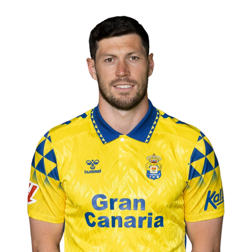
18 Viti Rozada (TD)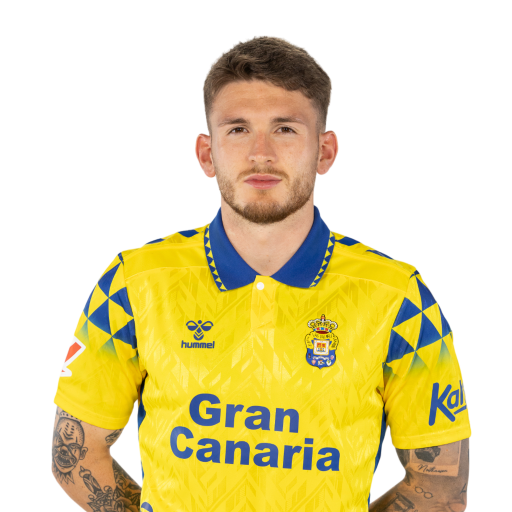
22 Daley Sinkgraven (TS)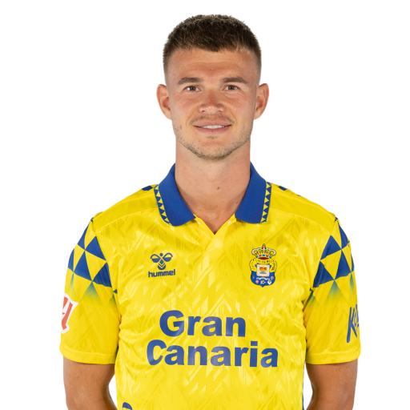
23 Álex Muñoz (DC)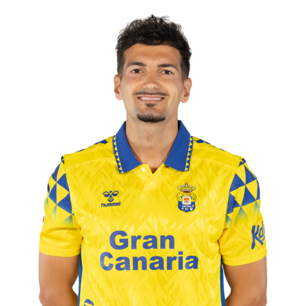
28 Juanma Herzog (DC)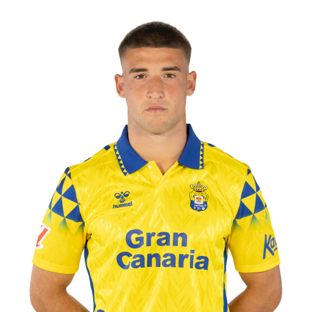
Centrocampisti
5 Javi Muñoz (CC)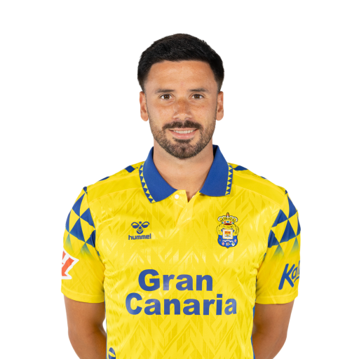
6 Fabio González (CC)
8 José Campaña (CC)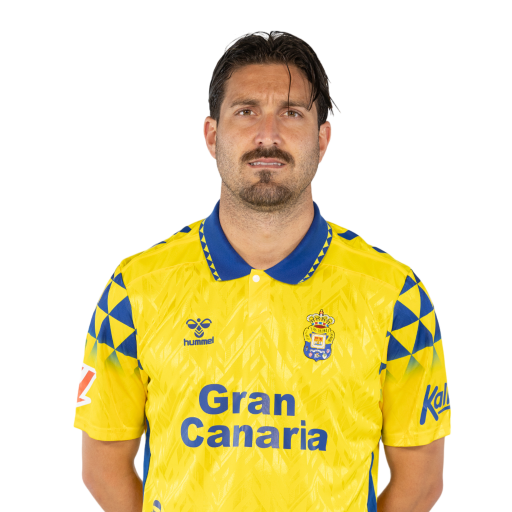
10 Alberto Moleiro (TQ)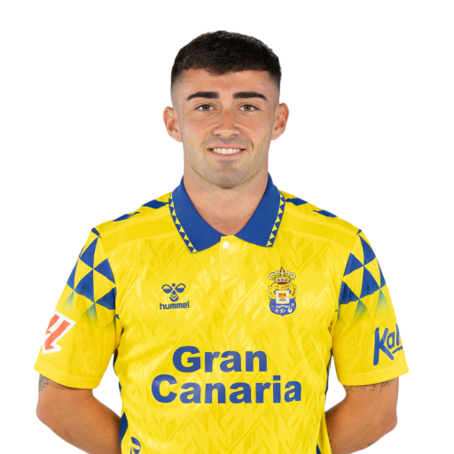
12 Enzo Loiodice (CC)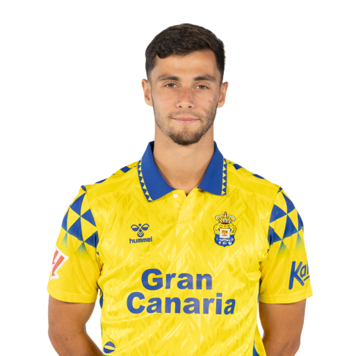
20 Kirian Rodríguez (TQ)
21 Iván Gil (TQ)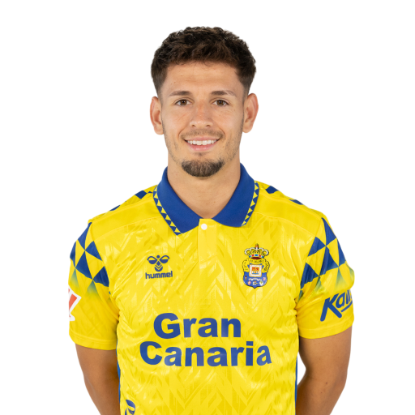
29 Dario Essugo (CC)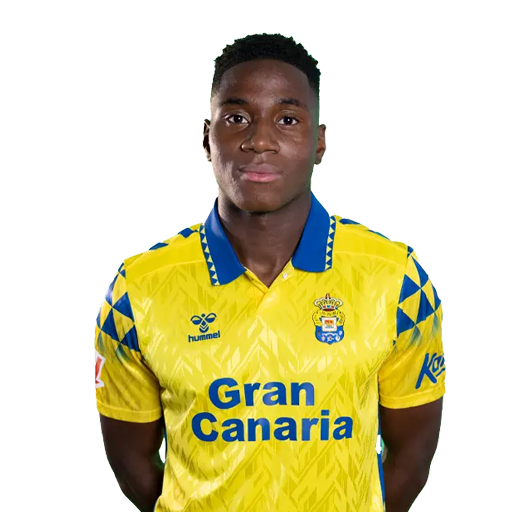
Attaccanti
2 Marvin Park (AD)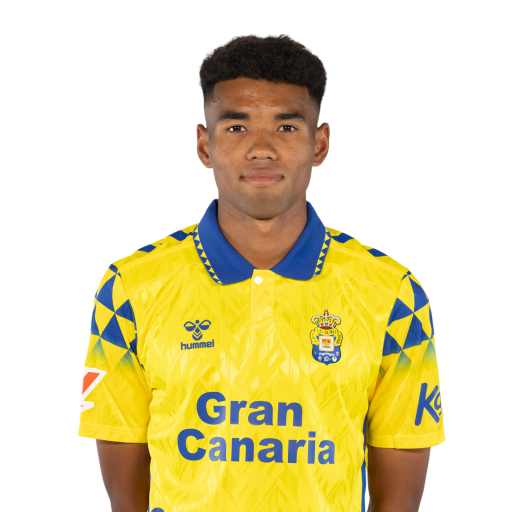
7 Pejiño (AS)
9 Marc Cardona (AT)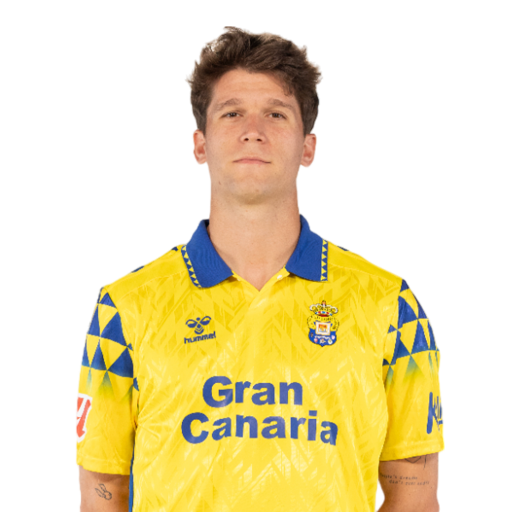
11 Benito Ramirez (AS)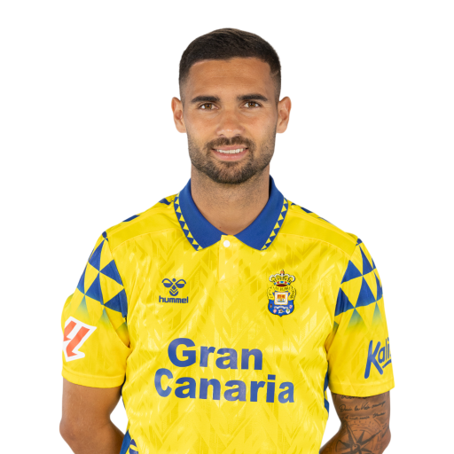
14 Manu Fuster (AS)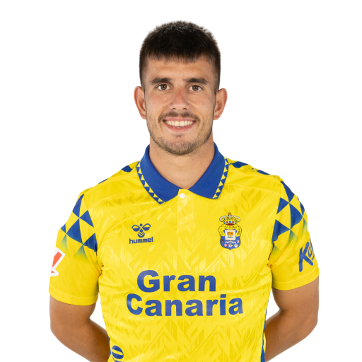
16 Oli McBurnie (AT)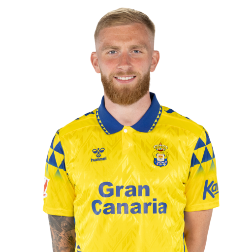
17 Jaime Mata (AT)
19 Sandro Ramírez (AT)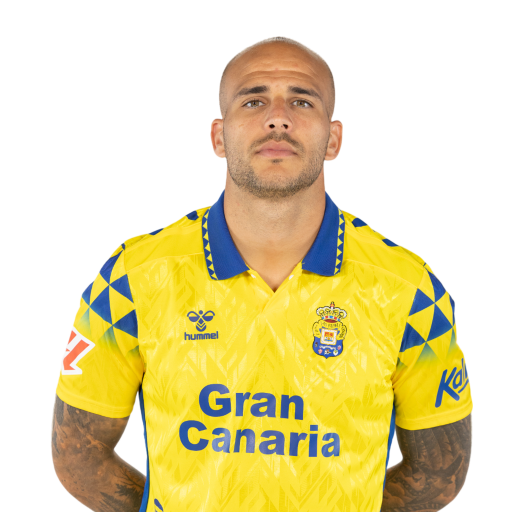
24 Adnan Januzaj (AD)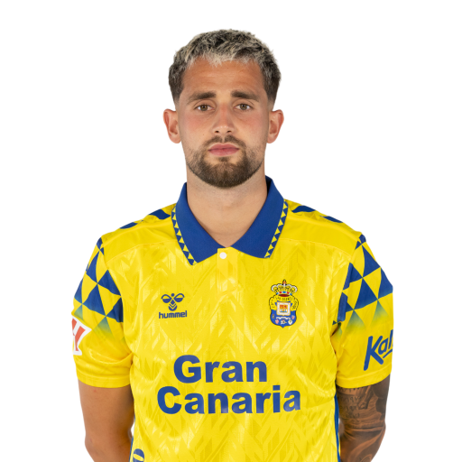
37 Fabio Silva (AT)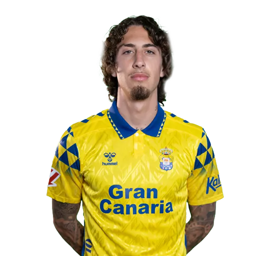